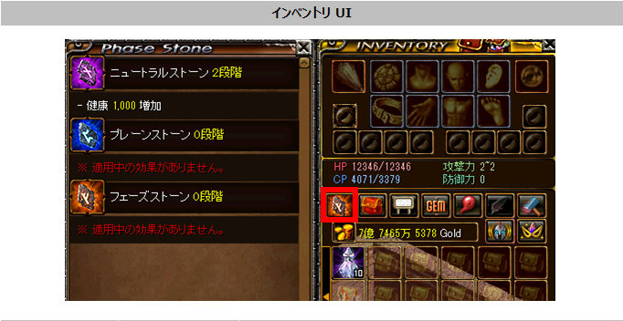

メニュー
トップ >>
アイテム >>
フェーズストーン
効果は PvE / PvP どちらでも適用されます。
2025年6月12日 (ver 0.0855) 実装 ／ 2026年2月19日 (ver 0.0870) 各ストーンに新規オプション 4種ずつ (合計12種) 追加
概要・開放方法
3種のストーン (順次解禁)
強化システム (1〜30段階)
関連アイテム (触媒・スクロール・フロッジ)
段階別の必要素材一覧
段階別の成功率早見表
スキルポイント (Lv1〜5)
ストーン別スキル一覧
2026/02/19 追加: 各ストーン新規オプション
シミュレーター
インベントリ内の Phase Stone UI (3ストーンの段階・効果が表示)
※ 各ストーンの最大段階は 30段階。各ストーン上に 同時に付与できる効果は最大8つ まで。
・「位相錬成一般触媒」または「位相錬成高級触媒」を使って錬成する
・1〜15 段階: 一般触媒 / 高級触媒 どちらでも錬成可
・16 段階以降: 高級触媒のみ (一般触媒は使用不可)
・「紅炎のスクロール」を併用すると成功確率が上昇 (高級触媒のみ対応 / 4段階以上で使用可)
■ 失敗時の挙動 (高級触媒使用時のみ)
・錬成に失敗すると 「赤いオーラの精粋」 が貯まり、100% に達した状態で錬成すると確定成功
・「紅炎のスクロール」 を使うと精粋の獲得量が増加
・失敗してもストーンが破壊されたり段階が下がることはありません
■ 錬成ポイントとリセット
・各段階の錬成成功で 錬成ポイント を獲得し、ストーンの効果スキルに振り分ける
・[初期化] ボタンで全錬成ポイントを回収可。1回の初期化につき 「フロッジストーン」 1個 を消費
・フロッジストーンは1種類のフェーズストーンのみを再振り。3種類全部やり直すには 3個必要。
※ 失敗時チャージ量100%蓄積で次の錬成は確定成功(天井)。「高級＋スクロール」だけは天井扱い、と理解。
※ 16段階以降の「一般のみ」が0%なのは、その段階で一般触媒が使えなくなるため。
※ 1スキルを Lv5 まで上げるのに合計 20pt。1ストーンに付与できる効果は最大8つまで。
■ プレーンストーン (中位 / 致命打・強打・限界突破効果系)
■ フェーズストーン (最上位 / 純粋ステ% / 最終ダメ%)
※ 上記数値は シミュレーター内蔵データ (phase_common.js) ベース。最新の数値はシミュレーター/ゲーム内 UI もご確認ください。
上記「ストーン別スキル一覧」では追加分を 黄色帯 「↓ 2026/02/19 追加」 で区切って表示しています。
※ フェーズの追加3つはダメージ増加と効果%増加の 2値同時上昇 オプション (例: 限界突破称号の物理ダメ+500 / 物理効果% +0.3% を1Lvで両方獲得)。
試行回数の期待値計算 / 段階別成功率 / 価値比較などをここで試せます。
出典: 公式お知らせ「フェーズストーンについてのご案内」(2025年6月12日 / ano=1485) / 「2月の新規アップデート#3 フェーズストーン新規オプション追加」(2026年2月19日 / ano=1965)
フェーズストーン
触媒を消費して 3種のストーン (ニュートラル / プレーン / フェーズ) を順に強化していき、貯まった錬成ポイントを各ストーンの効果スキルに振っていく キャラクター能力強化システム。効果は PvE / PvP どちらでも適用されます。
2025年6月12日 (ver 0.0855) 実装 ／ 2026年2月19日 (ver 0.0870) 各ストーンに新規オプション 4種ずつ (合計12種) 追加
概要・開放方法
3種のストーン (順次解禁)
強化システム (1〜30段階)
関連アイテム (触媒・スクロール・フロッジ)
段階別の必要素材一覧
段階別の成功率早見表
スキルポイント (Lv1〜5)
ストーン別スキル一覧
2026/02/19 追加: 各ストーン新規オプション
シミュレーター
概要・開放方法
| UI 起動 | インベントリの旧「取引」アイコンが フェーズストーン に置き換わる |
|---|---|
| 受注条件 | 1,250 レベル以上 |
| 受注 NPC | 冒険家協会古都ブルンネンシュティグ本部の 「ナギ・タニア」 (68, 25) クエスト「フェーズストーン」を完了すると活性化 |
| 錬成 NPC | 同 ナギ・タニア 経由でのみ錬成可能 |
| 効果適用 | PvE / PvP どちらでも |

インベントリ内の Phase Stone UI (3ストーンの段階・効果が表示)
3種のストーン (順次解禁)
3種のストーンは下から順に強化していきます。下位のストーンを 10段階以上 錬成すると次のストーンが解禁 されます。| ストーン | 解禁条件 | 役割の傾向 |
|---|---|---|
| ニュートラルストーン | クエスト完了で開放 | 基礎ステ / 物魔攻 / 命中・回避補正無視 など 基本の底上げ |
| プレーンストーン | ニュートラルを 10段階以上 錬成 | 致命打抵抗減 / 強打ダメ / 限界突破称号効果 など 中位 |
| フェーズストーン | プレーンを 10段階以上 錬成 | 純粋ステ% / 最終ダメ% / 位相系敵特化 など 最上位 |
※ 各ストーンの最大段階は 30段階。各ストーン上に 同時に付与できる効果は最大8つ まで。
強化システム (1〜30段階)
■ 錬成のしくみ・「位相錬成一般触媒」または「位相錬成高級触媒」を使って錬成する
・1〜15 段階: 一般触媒 / 高級触媒 どちらでも錬成可
・16 段階以降: 高級触媒のみ (一般触媒は使用不可)
・「紅炎のスクロール」を併用すると成功確率が上昇 (高級触媒のみ対応 / 4段階以上で使用可)
■ 失敗時の挙動 (高級触媒使用時のみ)
・錬成に失敗すると 「赤いオーラの精粋」 が貯まり、100% に達した状態で錬成すると確定成功
・「紅炎のスクロール」 を使うと精粋の獲得量が増加
・失敗してもストーンが破壊されたり段階が下がることはありません
■ 錬成ポイントとリセット
・各段階の錬成成功で 錬成ポイント を獲得し、ストーンの効果スキルに振り分ける
・[初期化] ボタンで全錬成ポイントを回収可。1回の初期化につき 「フロッジストーン」 1個 を消費
・フロッジストーンは1種類のフェーズストーンのみを再振り。3種類全部やり直すには 3個必要。
関連アイテム (触媒・スクロール・フロッジ)
| アイテム | 最大所持数 | 用途・入手 |
|---|---|---|
| 位相錬成一般触媒 | 999個 | 15段階までの錬成に使用。修復済みタティリス遺跡の出土品 110個 保有で 1個制作可能 (材料が足りていればゴールドは消費されない) |
| 位相錬成高級触媒 | 999個 | 全段階で使用可能。16段階以降はこちらのみ。 ナギ・タニアから購入 |
| 紅炎のスクロール | 999個 | 高級触媒と併用で成功率と精粋獲得量が上昇。4段階以上で使用可 ナギ・タニアから購入 |
| フロッジストーン | 255個 | 1ストーン分の錬成ポイントを初期化。ショップでのみ購入 |
段階別の必要素材一覧
※ 16段階以降は一般触媒では強化できないため「-」表記。インゴットは 11段階以降で必要。| 段階 | 一般触媒 | 高級触媒 | 紅炎のスクロール | インゴット |
|---|---|---|---|---|
| 1 | 2 | 1 | 0 | 0 |
| 2 | 3 | 2 | 0 | 0 |
| 3 | 4 | 3 | 0 | 0 |
| 4 | 5 | 4 | 10 | 0 |
| 5 | 10 | 5 | 11 | 0 |
| 6 | 15 | 6 | 12 | 0 |
| 7 | 20 | 7 | 13 | 0 |
| 8 | 25 | 8 | 14 | 0 |
| 9 | 30 | 9 | 15 | 0 |
| 10 | 40 | 10 | 20 | 0 |
| 11 | 50 | 10 | 25 | 1 |
| 12 | 60 | 10 | 30 | 1 |
| 13 | 70 | 20 | 40 | 1 |
| 14 | 80 | 20 | 50 | 1 |
| 15 | 100 | 20 | 50 | 1 |
| 16 | － | 20 | 50 | 2 |
| 17 | － | 20 | 80 | 4 |
| 18 | － | 20 | 80 | 6 |
| 19 | － | 20 | 100 | 8 |
| 20 | － | 20 | 100 | 10 |
| 21 | － | 30 | 120 | 10 |
| 22 | － | 30 | 120 | 10 |
| 23 | － | 30 | 140 | 10 |
| 24 | － | 30 | 140 | 10 |
| 25 | － | 40 | 160 | 20 |
| 26 | － | 40 | 160 | 20 |
| 27 | － | 40 | 180 | 20 |
| 28 | － | 40 | 180 | 20 |
| 29 | － | 40 | 200 | 20 |
| 30 | － | 40 | 200 | 20 |
段階別の成功率早見表
3パターンの錬成方法ごとの成功率です。「失敗時チャージ量」は赤いオーラの精粋に貯まる量(高級触媒系のみ)。| 段階 | 一般のみ | 高級のみ | 高級＋スクロール | 失敗時チャージ量 |
|---|---|---|---|---|
| 1 | 100% | 100% | 100% | 100% |
| 2 | 90% | 100% | 100% | 100% |
| 3 | 80% | 100% | 100% | 100% |
| 4 | 70% | 100% | 100% | 100% |
| 5 | 60% | 90% | 100% | 100% |
| 6 | 50% | 85% | 100% | 50% |
| 7 | 20% | 80% | 90% | 50% |
| 8 | 10% | 70% | 80% | 50% |
| 9 | 5% | 60% | 70% | 50% |
| 10 | 2.5% | 55% | 60% | 50% |
| 11 | 1% | 45% | 55% | 33% |
| 12 | 0.8% | 45% | 55% | 33% |
| 13 | 0.6% | 40% | 50% | 33% |
| 14 | 0.4% | 30% | 40% | 33% |
| 15 | 0.2% | 20% | 30% | 33% |
| 16 | 0% | 20% | 24% | 20% |
| 17 | 0% | 16% | 20% | 16% |
| 18 | 0% | 14% | 16% | 14% |
| 19 | 0% | 12% | 14% | 12% |
| 20 | 0% | 10% | 12% | 10% |
| 21 | 0% | 9% | 10% | 9% |
| 22 | 0% | 8% | 9% | 8% |
| 23 | 0% | 7% | 8% | 7% |
| 24 | 0% | 6% | 7% | 6% |
| 25 | 0% | 5% | 6% | 5% |
| 26 | 0% | 4% | 5% | 4% |
| 27 | 0% | 3% | 4% | 3% |
| 28 | 0% | 2% | 3% | 2% |
| 29 | 0% | 1% | 2% | 1% |
| 30 | 0% | 1% | 1% | 1% |
※ 失敗時チャージ量100%蓄積で次の錬成は確定成功(天井)。「高級＋スクロール」だけは天井扱い、と理解。
※ 16段階以降の「一般のみ」が0%なのは、その段階で一般触媒が使えなくなるため。
スキルポイント (Lv1〜5)
各ストーンの効果スキルは Lv1〜5 まで上げられます。Lv ごとに必要な錬成ポイントは下表 (全ストーン共通)。| スキル Lv | 追加で必要なポイント | 累積ポイント |
|---|---|---|
| 1 | 1 | 1 |
| 2 | 2 | 3 |
| 3 | 4 | 7 |
| 4 | 5 | 12 |
| 5 | 8 | 20 |
※ 1スキルを Lv5 まで上げるのに合計 20pt。1ストーンに付与できる効果は最大8つまで。
ストーン別スキル一覧
■ ニュートラルストーン (基礎能力底上げ系)| スキル名 | 1Lvあたり | Lv5 最大効果 |
|---|---|---|
| 健康ステータス増加 | +1,000 | +5,000 |
| 知恵ステータス増加 | +1,000 | +5,000 |
| 敏捷ステータス増加 | +1,000 | +5,000 |
| カリスマステータス増加 | +1,000 | +5,000 |
| 運ステータス増加 | +1,000 | +5,000 |
| ポーション回復速度増加 | +40% | +200% |
| 魔法ダメージ吸収増加 | +20% | +100% |
| 対象の命中率補正値無視 | +20% | +100% |
| 対象の回避率補正値無視 | +20% | +100% |
| 物理攻撃力増加 | +100% | +500% |
| 魔法攻撃力増加 | +20% | +100% |
| 全ての属性攻撃力増加 | +20% | +100% |
| ターゲットの全属性抵抗減少 | +10% | +50% |
| ↓ 2026/02/19 追加 | ||
| 攻撃速度増加 | +15% | +75% |
| 移動速度増加 | +8% | +40% |
| 最大HP増加 | +75% | +375% |
| 最大CP増加 | +75% | +375% |
■ プレーンストーン (中位 / 致命打・強打・限界突破効果系)
| スキル名 | 1Lvあたり | Lv5 最大効果 |
|---|---|---|
| 力ステータス増加 | +1,000 | +5,000 |
| 知識ステータス増加 | +1,000 | +5,000 |
| ターゲットの致命打抵抗減少 | +5% | +25% |
| 物理クリティカルダメージ増加 | +20% | +100% |
| ダブルクリティカルダメージ増加 | +4% | +20% |
| 魔法致命打ダメージ増加 | +3% | +15% |
| 物理強打ダメージ増加 | +50% | +250% |
| 魔法強打ダメージ増加 | +2% | +10% |
| 限界突破称号の物理効果増加 | +1,000 | +5,000 |
| 限界突破称号の魔法効果増加 | +1,000 | +5,000 |
| 限界突破称号の効果増加 | +1,000 | +5,000 |
| ↓ 2026/02/19 追加 | ||
| 全純粋ステータス% 増加 | +1% | +5% |
| 被ダメージ% 減少 | +1% | +5% |
| 全スキルレベル増加 | +2 | +10 |
| シールド制限数値増加 | +100 | +500 |
■ フェーズストーン (最上位 / 純粋ステ% / 最終ダメ%)
| スキル名 | 1Lvあたり | Lv5 最大効果 |
|---|---|---|
| 純粋ステータス％増加 (力) | +4% | +20% |
| 純粋ステータス％増加 (知識) | +4% | +20% |
| 限界突破称号の物理％効果増加 | +1% | +5% |
| 限界突破称号の魔法％効果増加 | +1% | +5% |
| 限界突破称号の％効果増加 | +0.6% | +3% |
| 最終物理ダメージ増加 | +3% | +15% |
| 最終魔法ダメージ増加 | +3% | +15% |
| 最終ダメージ増加 | +3% | +15% |
| ターゲットの最終ダメージ補正無視 | +2% | +10% |
| ボス討伐時のダメージ増加 | +3% | +15% |
| 位相系の敵討伐時ダメージ増加 | +5% | +25% |
| ↓ 2026/02/19 追加 | ||
| ブラッドレコード増加 | +10 | +50 |
| 限界突破称号の物理ダメージ + 物理効果% 増加 | +500 / +0.3% | +2,500 / +1.5% |
| 限界突破称号の魔法ダメージ + 魔法効果% 増加 | +500 / +0.3% | +2,500 / +1.5% |
| PVP状態時のダメージ + 防御力% 増加 | +10% / +10% | +50% / +50% |
※ 上記数値は シミュレーター内蔵データ (phase_common.js) ベース。最新の数値はシミュレーター/ゲーム内 UI もご確認ください。
2026/02/19 追加: 各ストーン新規オプション (12種)
2026年2月19日 (ver 0.0870) のアプデで、各ストーンに新規オプションが 4種ずつ (3ストーン × 4 = 合計 12種) 追加されました。上記「ストーン別スキル一覧」では追加分を 黄色帯 「↓ 2026/02/19 追加」 で区切って表示しています。
| ストーン | 追加されたオプション (4種) |
|---|---|
| ニュートラル | 攻撃速度 / 移動速度 / 最大HP / 最大CP (各 +X%/Lv) |
| プレーン | 全純粋ステータス% / 被ダメージ%減少 / 全スキルレベル / シールド制限数値 |
| フェーズ | ブラッドレコード / 限界突破称号の 物理ダメ+物理効果% / 同 魔法 / PVP状態時のダメ+防御力% |
※ フェーズの追加3つはダメージ増加と効果%増加の 2値同時上昇 オプション (例: 限界突破称号の物理ダメ+500 / 物理効果% +0.3% を1Lvで両方獲得)。
シミュレーター
赤石の民衆では、フェーズストーン用のシミュレーターを用意しています。試行回数の期待値計算 / 段階別成功率 / 価値比較などをここで試せます。
- フェーズストーン シミュレータ — 段階・スキル割り振り・期待値・相場比較
出典: 公式お知らせ「フェーズストーンについてのご案内」(2025年6月12日 / ano=1485) / 「2月の新規アップデート#3 フェーズストーン新規オプション追加」(2026年2月19日 / ano=1965)